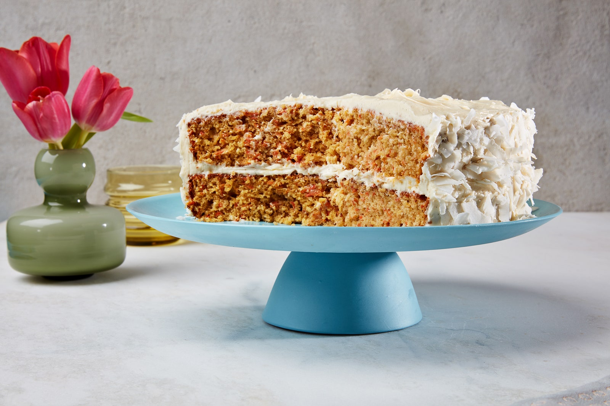
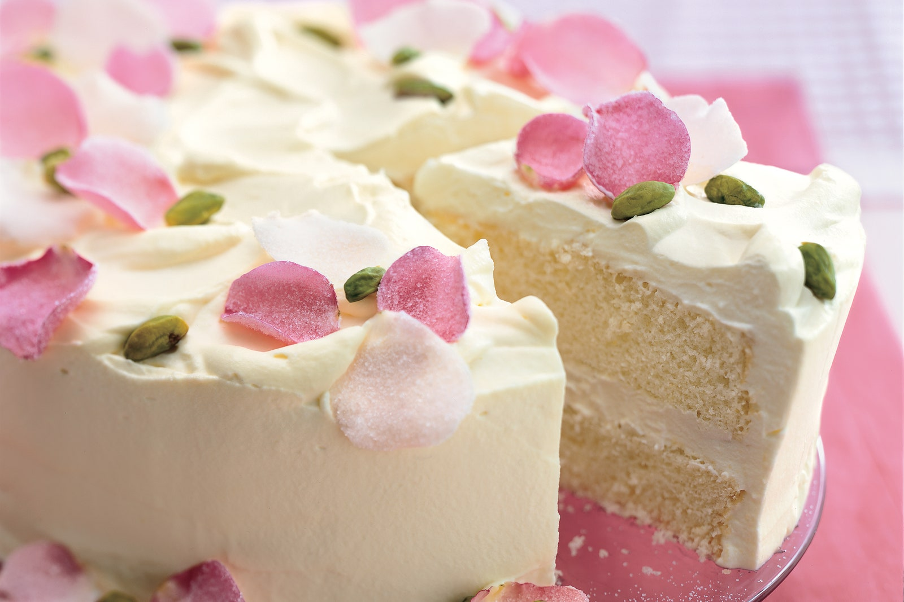

About
History

Share
Stories
Bakery
Please subscribe to our youtube channel for more cakey goods

Red Velvet Cake
Red velvet cake is essentially a butter cake, though it is frequently made with oil instead of
butter. In addition, cocoa is added to the cake batter to create the distinct red velvet flavor —
originally it was a reaction between buttermilk and the raw cocoa widely available at the time of
red velvet's inception that caused a ruddy-hued crumb.

Carrot Cake
Carrot cake uses the leavening practices of butter cake, but instead of butter uses a neutral oil
like vegetable or canola oil. For this reason, it will keep a little longer than butter cakes but
can sometimes come out on the greasy side.

Chiffon Cake
This fairly recent American creation was invented by a salesman who sold the recipe to General
Mills, which spread the recipe through marketing materials in the 1940s and 1950s.

Biscuit Cake
Biscuit (always pronounced the French way as bees-kwee) cakes are another type of sponge cake
containing both egg whites and yolks, but, unlike genoise, the whites and yolks are whipped
separately and then folded back together.